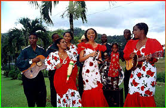

Parang bands would move from house to house in neighbourhood serenading to family and friends during festive seasons. It would be customary for families to greet the Paranderos with drinks and food, following specific steps or rituals that accompanied the entry to a home, the dedication of songs to a host, the eating and drinking, and the departure. The festive season begin in mid October and goes approximately to January 6 which is the feast of Epiphany. The resulting atmosphere would be that of happiness, togetherness and the joy of good Christmas lime that continue to the early hours of the morning.
